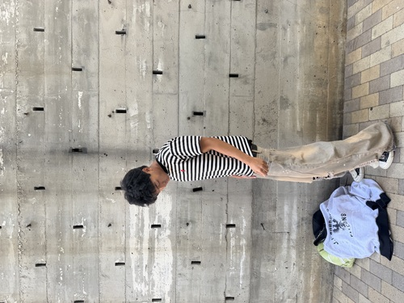
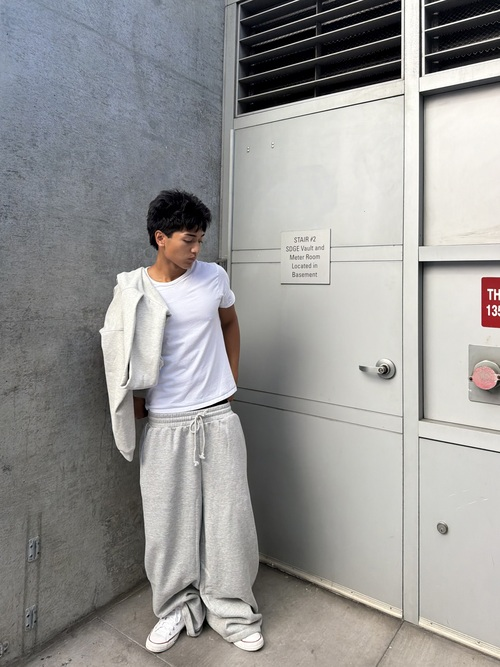
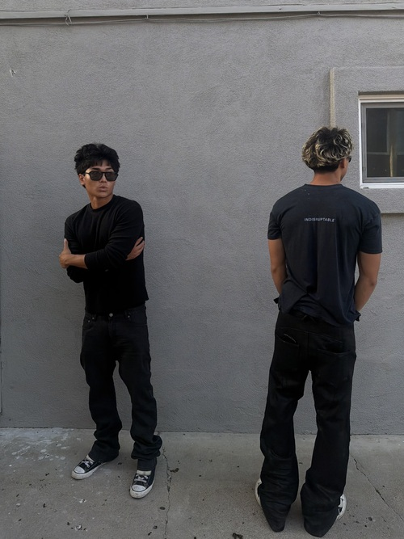
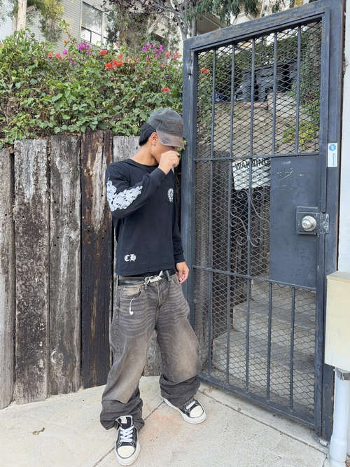

I am an undergraduate Neuroscience student at the University of California, Riverside pursuing a specialized pre-medical pathway toward becoming a Forensic Pathologist. Fascinated by human neuroanatomy, molecular biology, and post-mortem tissue diagnostics, I am dedicated to constructing a comprehensive scientific foundation to excel in medical education and pathology specialization.
My clinical and community background spans direct end-of-life care assistance as a hospice volunteer, active involvement with community animal shelter operations, and fast-paced retail technology consulting at Best Buy. These multifaceted experiences have honed my interpersonal communication, analytical troubleshooting, attention to detail, and empathetic patient interaction in sensitive environments.
In addition to my academic coursework, I actively pursue undergraduate clinical research opportunities, tissue dissection workshops, and bioethics seminars. My long-term aspiration is to contribute to medical science through forensic autopsy research, law enforcement investigative support, and public health awareness.
• Provided empathetic emotional support and companionship to terminally ill patients in end-of-life care settings
• Assisted medical nurses and family members with non-clinical care, patient mobility support, and comfort measures
• Maintained strict adherence to HIPAA regulations, patient confidentiality, and medical ethics protocols
• Documented patient interaction logs and coordinated family visit schedules with clinical staff
• Consulted customers on computing hardware, software setups, and consumer electronics to meet personal needs
• Diagnosed basic hardware issues, managed inventory restocking, and maintained organized retail displays
• Developed strong problem-solving skills, customer communication techniques, and adaptability under pressure
• Achieved top-tier customer satisfaction ratings within the sales department
• Assisted graduate researchers with laboratory tissue sample preparation, slide staining, and light microscopy
• Managed laboratory inventory, sanitized equipment according to biohazard safety standards, and prepared chemical solutions
• Recorded and compiled quantitative experimental data using Excel and specialized lab analysis software
• Supported shelter staff with animal intake, dietary feeding routines, sanitation, and behavioral socialization
• Participated in community adoption events and educational outreach promoting animal health and welfare
• Assisted veterinary technicians during routine health checkups and basic medical recordkeeping
Relevant Coursework: Human Anatomy & Physiology, Cellular Neuroscience, Organic Chemistry, Genetics, Medical Ethics, Introductory Pathology, Biostatistics



